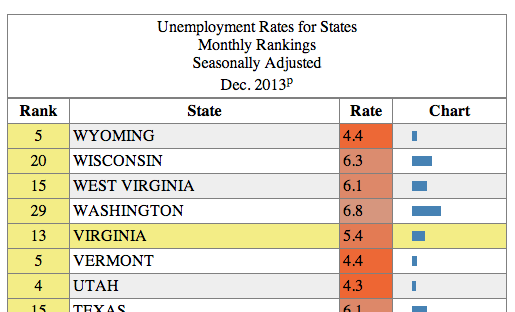

Homework 3
This homework was directly taken from csc171 at Harvard. All your work should be original. ;-P This is there homework 1 and will be our homework 3. Please put your work in a bit-bucket repository post the link on blackboard (when there is a place for submission)
Assignment completed by: Edit and put your name here
Email: put your email here
In this homework, you will use D3.js to create an interactive data table and a bar chart. D3 stands for "Data Driven Documents." It is a library for JavaScript that is very useful for creating interactive visualizations, but D3 can be used to achieve many tasks that other libraries like -- JQuery -- also enable. This homework assumes that you have read and coded along with Chapters 1-8 in D3 - Interactive Data Visualization for the Web by Scott Murray.
We use data collected and published by the U.S. Bureau of Labor Statistics. The Bureau defines itself as follows:
The Bureau of Labor Statistics is the principal fact-finding agency for the Federal Government in the broad field of labor economics and statistics.
Unemployment data are regularly published on a specific BLS web page.
The Bureau of Labor Statistics released, for example, a statement:
The unemployment rate declined from 7.0 percent to 6.7 percent in December, while total nonfarm payroll employment edged up (+74,000), the U.S. Bureau of Labor Statistics reported today. Employment rose in retail trade and wholesale trade but was down in information."
In this homework, we will explore how this unemployment is broken down by state. Below is a brief sample of this data (Nov. 2013., but data on the page are more recent):
| Rank | State | Rate |
|---|---|---|
| 1 | NORTH DAKOTA | 2.6 |
| 2 | SOUTH DAKOTA | 3.6 |
| 3 | NEBRASKA | 3.7 |
| 4 | UTAH | 4.3 |
This is essentially a one dimensional dataset — seems simple enough. We will stick to this dataset, and explore the visualization options for such a tiny and simple dataset. Along the way, you will pick up the D3 skills necessary to tackle bigger and more complex datasets.
Ensure you respond to questions in the appropriate text file (as described in the subheading for each section). You can use Markdown to format your answers.
We recommend that you name your Bitbucket repository following this convention:
cs171-hw3-lastname-firstnameUse the file templates provided for your answers and your code. Make sure your repository is private.
Place answers to the questions below in intro_answers.md.
<table>Place answers to the questions below in problem_1_answers.md.
The unemployment data available on the BLS website are accessible as an HTML table, located at the following URL:
Each row represents a state; columns represent the rank, the state's name and the rate of unemployment. Using such a format is common for publishing raw data. However, as you may have noticed during the warm up, tables are not well suited for analysis by humans. For example, finding the minimum and maximum values takes time and requires to scroll as the table is long. Or finding a state if the table is not in alphabetical order also takes time.
Now take a detailed look at how this table is structured:
When looking at the table's DOM or source code:
colspan="3" attribute of the <th> node do?th element containing "Rank". For each, state whether they are set as an HTML attribute or a CSS style and describe them in a few words. Include only styles directly applied to the element, not styles inherited/cascading from parent elements or styles from the default user agent stylesheet. Exclude overwritten styles. For HTML attributes, state the CSS equivalent.Implement the features in the provided table.html file
Creating a table similar to the one on BLS can be done manually with a simple text editor. However, you'd need to go through the same tedious process every time the data is updated. We can do better. Let's create a table dynamically using D3 and the data we provided. As a reminder, D3 is not just a visualization framework: it's simply designed to help manipulate DOM elements (hence the name "Data Driven Documents"). It's well suited for such a task, in spite of there being no visualization involved (yet).
Your final result should look somewhat like this:

To get started,
<table> element. See the MDN developer guide and reference on the topic. As is common with real world data, the source BLS page may use incorrect tags or use non-standard features or incorrectly formatted HTML. We expect valid, standards-compliant HTML for your submission.We extracted the data from the table and put it in the file unemp_states_us_nov_2013.tsv.
Because of the same-origin policy, you'll need a running local web server. Open a terminal window, change directory to the folder containing table.html and run:
python -m SimpleHTTPServerYou'll see your page at http://localhost:8000/table.html. Note that you'll need to have Python installed (you probably already do if you're on Linux or Mac OS). For more details on how to set up a local web server, refer to CH4 of Interactive Data Visualization.
d3.tsv() function skips headers (the first row), but that row contains important information. Replace the d3.tsv() call with d3.text() and use the lower-level d3.tsv.parseRows() to parse the TSV (see the documentation).<thead> to the DOM, with the headers you just collected in it. It is constructed the same way as the <tbody> elements, but rows use <th>.<h1> element matching the title of the BLS page and a <caption> element for table header title. The text values for these can be hardcoded in your Javascript.:nth-child(n) CSS selector.:hover selector. You'll find that it's more tricky to highlight the column.Continue working on table.html.
Dynamically sorting rows (by ascending or descending order) is a simple yet powerful technique to efficiently organize data and find minimal or maximal values on one dimension. We provide you with code samples to make an interactive HTML table and to color cells by rank.
Here is a function that compares two values, and returns 1 if a is greater than b, 0 if a equals b, and -1 if b is greater than a.
function ascending(a, b) {
return a > b ? 1 : a == b ? 0 : -1;
}This function is part D3 and can be invoked with d3.ascending()
The next function, .sort(), changes the order of the DOM of the elements. It iterates over all pairs of elements, passing the two elements to the compare function (see the documentation).
For example, this snippet would sort the table alphabetical by state (actually, it will sort it lexicographically):
tbody.selectAll("tr").sort(function(a, b) {
return d3.ascending(a[1], b[1]);
});We now use the sorting function to reorder the table. As you may have noticed, an HTML <table> vertically orders rows according to their relative position in the DOM. For instance, NORTH DAKOTA is above SOUTH DAKOTA because it appears before it in the DOM. Changing their DOM position will change their Y-position on the screen.
<th> cell.cursor: s-resize if clicking will trigger an ascending sort and cursor: n-resize if it will trigger a descending sort.Continue working on table.html. Answer the questions in problem_4_answers.md.
Let's color cells according to their sorted position. This will be your first visual encoding of data... yeah! Below is sample code that creates a color scale. Note this is a linear scale (documentation) since we are mapping numerical values to color.
var color = d3.scale.linear()
.domain([0, tbody.selectAll("tr")[0].length-1])
.interpolate(d3.interpolateRgb)
.range(["orangered", "silver"])domain() function is the data range upon which the scale is calculated. What does d3.selectAll("tbody tr")[0].length-1 mean?color(0), color(10) and color(150)?domain() was the minimum and maximum rate values, how would that change the scale? In what situations would this be appropriate?The code below adds an extra column to the table, containing a horizontal bar with a width that is proportional to the rank value:
rows.insert("td").append("svg")
.attr("width", width)
.attr("height", height)
.append("rect")
.attr("height", height)
.attr("width", function(d) { return parseFloat(d[0]); });width and height.Implement the bar chart in bar.html. Answer the questions in problem_5_answers.md
Problem 5 reference solution
We are now going to create a horizontal bar chart with its own layout. The bars will be encoded will be similar to the chart column of the previous problem, but this time you will have to create your own layout by setting the bar groups' x, y positions.
Let's first define the perimeter of the visualization canvas and the position on the chart within this canvas. Following D3's margin convention we define the following parameters:
var margin = {top: 50, bottom: 10, left:300, right: 40};
var width = 900 - margin.left - margin.right;
var height = 900 - margin.top - margin.bottom;Let's now define the vertical position for each bar. We define it as a linear scale yScale. The bars' width will be defined by xScale.
var xScale = d3.scale.linear().range([0, width]);
var yScale = d3.scale.ordinal().rangeRoundBands([0, height], .8, 0);Consider the provided sample code this Gist and answer the following questions:
g elements? (keep in mind you'll be adding a title to the chart)text elements before or after the rect elements? Why?To make the chart more useful, let's add some text labels. Below is a code example showing how add a text node within the same SVG group as the bars:
groups.append("text")
.attr("x", function(d) { return xScale(d.Rate); })
.attr("y", function(d) { return bar_height/2; })
.text(function(d) { return "your text"; })Open bar.html and add two different labels:
Tip: the text-anchor attribute may come handy and you might want to look at dx and dy attributes for relative positioning.
Finally, add a title centered at the top of the chart chart using a text element.
Your next task is to reorder the chart, similarly to what you did for the table. You now have more flexibility than before since SVG elements can be freely moved in the 2D space by setting their coordinates. However, we have to manually manage the x, y position of all the elements or groups of elements.
First, let's add form elements to control the chart's order. Form elements are useful, as they have a familiar affordance (i.e., users know how they work) and their state is visible. Add the following buttons to your bar charts.
<label><input type="radio" name="order" value="state"> State</label>
<label><input type="radio" name="order" value="rate" checked> Rate</label>Moving bars requires to change their coordinates. If you remember the HTML table, we only had to sort the <tr> nodes to visually re-organize the table. But now, rect elements in SVG are only displayed based on their x, y coordinates. You can use the following strategies to change the position of the bars:
(dx, dy) of the element.attr("transform", "translate(x, y)") (which does not change the (x, y) but moves ("translates") the element).We are going to use a data-driven approach and change the bars position using an SVG translation (attr("transform")).
reorder() which is triggered every time the user clicks on a form element (d3.selectAll("input").on("change", reorder);)reorder() function as follows:data. You may reuse previous sorting code you developed (ensure that your correctly break rate ties)bars
.transition()
.duration(750)
.delay(function(d, i) { return i * 10; })
.attr("transform", function(d, i) { return "translate("+ ?? +", "+ ?? +")"; }) click event instead of the change event).That's it, you have created your first D3 visualization. Congratulations! If you're looking for more, you can continue with the bonus problem.
Put your bonus implementation in the files bonus_table.html and bonus_bar.html. Use your previous solution as the basis. If you complete all the steps, you will get 0.5 points extra.
insert() function)Filtering is an important feature to visually reduce the number of displayed objects. It lets the user focus on elements which correspond to a criteria. The markup below adds a slider to the page (ensure you have a modern browser, since this is HTML5 functionality that won't work in